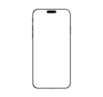
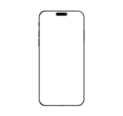
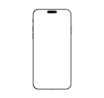

TAGLINE
Source helps creators do more of what they love
A device that enable collaboration will lessen the chance of work having to be completely redone.
COMPUTERISE
 

A device that enable collaboration will lessen the chance of work having to be completely redone.
COMPUTERISE


In such a test,the user performs realistic tasks by interacting with the paper prototype
Three techiques of paper prototyping used for usability testing are comps,wireframe
Rapid prototyping involves a group of designers who on each create a paper prototype
Functionality is similarly unimportant,but in this case are closer to the final product
In the content of informaion achitecture,information is separate from both knowledge and data,and lies nebulously between them.